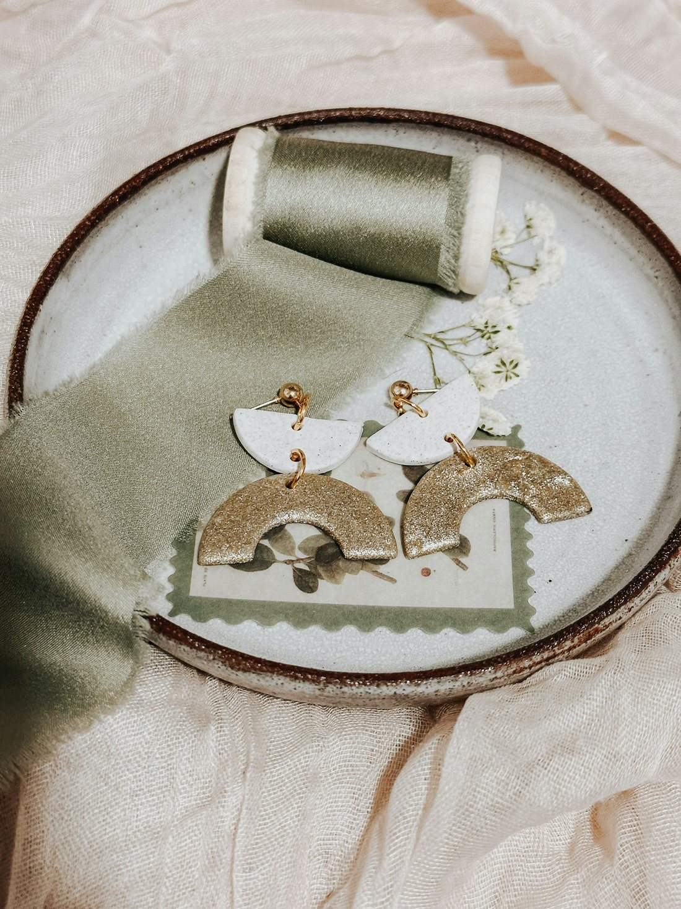
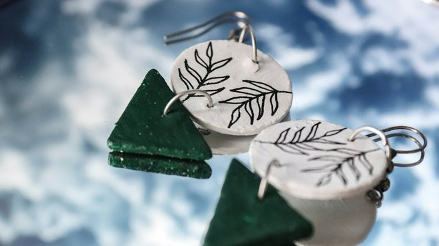
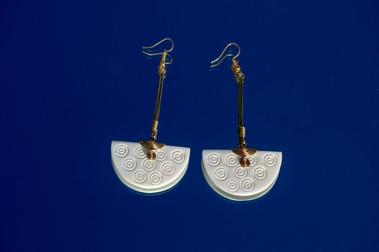
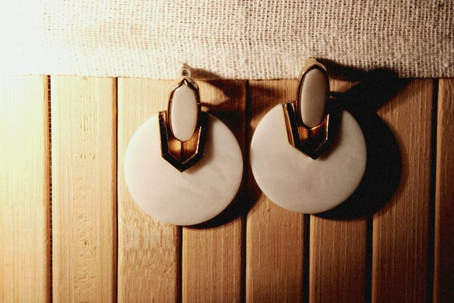
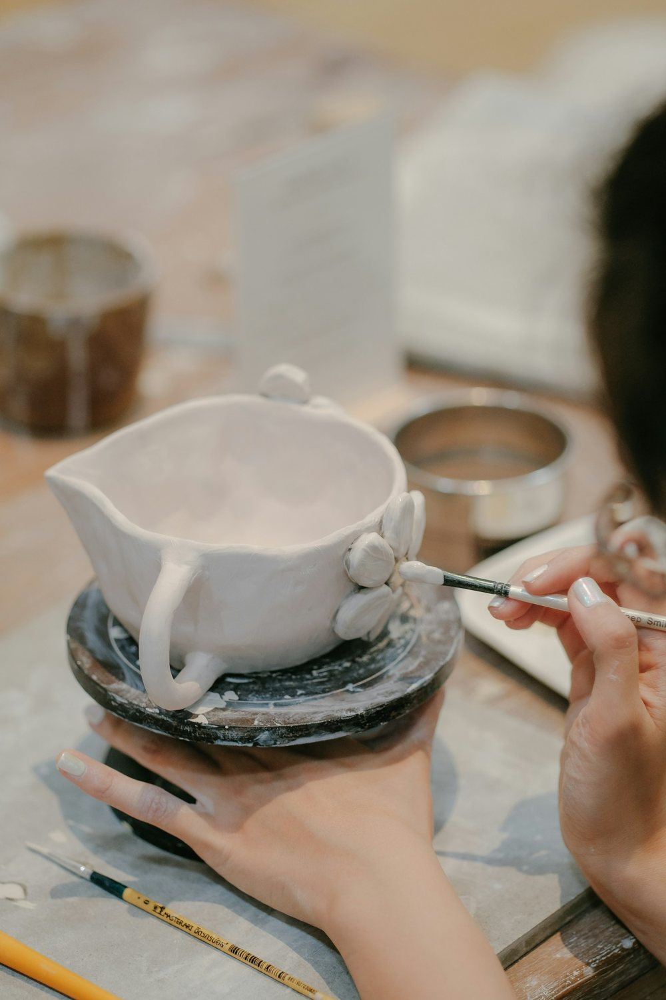

Accessory

Kintsugi Accessory
金継ぎアクセサリー
割れた陶片を金で縁取って、ピアスやブローチに。直したい器がなくても、1.5時間で自分だけのアクセサリーがつくれます。
TOP ／ 一日体験・コース ／ 金継ぎアクセサリー
Accessory
Kintsugi Accessory
割れた陶片を金で縁取って、ピアスやブローチに。直したい器がなくても、1.5時間で自分だけのアクセサリーがつくれます。
TOP ／ 一日体験・コース ／ 金継ぎアクセサリー

About this courseコースについて
割れた器のかけら（陶片）を、金で縁取ってアクセサリーに仕立てるコースです。色や柄の違う陶片の中から好きなものを選ぶので、同じものはふたつとありません。
Itemsつくれるもの
1回のレッスンで、ピアス・イヤリングなら1ペア、ブローチ・ネックレスなら1点つくれます。

Pierced earrings
チタン製の金具も選べるので、金属アレルギーが気になる方も安心です。

Earrings
ネジ式で、耳たぶにやさしく固定できます。
Brooch
コートやストールに。少し大きめの陶片がおすすめです。

Necklace
長さは40cmと45cmから選べます。
※ 写真はアクセサリーの形のイメージです。教室では、割れた陶片を金で縁取って仕上げます。
Schedule当日の流れ
0:00
色や柄の違う陶片の中から、好きなものを選びます。
0:15
やすりで角をなめらかにして、身につけやすい形に整えます。
0:35
合成うるしを縁に塗り、金色の粉をのせて仕上げます。
1:05
好きな金具を選んで、しっかり接着します。
1:30
ギフトにもなる小さな箱に入れてお渡しします。

Detail料金・詳細
Reservationご予約
まずは2時間の一日体験から。器も道具も教室でご用意するので、手ぶらでお越しください。
ご予約・お問い合わせはお電話のみで承っております
090-2323-4771受付時間 10:00 – 18:00（水・木・土・日）／ 開講日以外は留守番電話で折り返します
Accessアクセス
〒530-0016 大阪府大阪市北区中崎 0-0-0 2F
地下鉄谷町線「中崎町駅」2番出口より徒歩3分
阪急「大阪梅田駅」茶屋町口より徒歩10分
開講日 水・木・土・日 10:30 – 20:30
TEL 090-2323-4771（ご予約はお電話のみ）